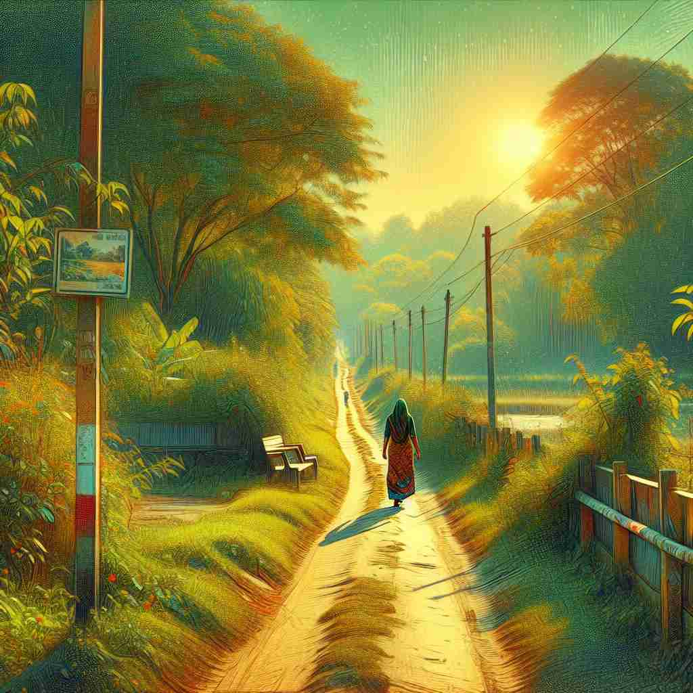

💬 The woman loves to walk along the footpath in the countryside.

💬 People like to walk along the footpath in the countryside.
🗝️ n. a path for people to walk on, especially in the countryside
🖼️ 在一个风景如画的乡村，下过雨后空气清新。一条曲折的小路穿过绿色的田野，村民和游客悠闲地沿着这条小道散步，享受着自然的宁静。这个场景展示了'footpath'作为乡村人行小道的含义。
🔍 footpath的核心含义是"供人步行的小径"。无论是在乡村、城市还是花园中，只要想象人们在一条专门为行走而设的窄路上行走，就能联想到footpath的各种用法。这个核心概念在不同环境中的应用帮助你更容易记住和理解它的多重含义。
💬 The woman loves to walk along the footpath in the countryside.
💬 People like to walk along the footpath in the countryside.
🌳 由词根 "foot"（脚）加上词根 "path"（小路）组合而成，直译为“供人步行的小路”。
💡 记忆 "footpath" 时，可以联想为 "foot"（脚）和 "path"（路径）的结合，即一条专为步行者设计的小路。通过将两个简单的词组合在一起，更容易理解和记住。
🗝️ n. a paved path for pedestrians at the side of a road
🖼️ 在城市的繁忙街道旁，一条整齐的混凝土人行道供行人步行。上班族们急匆匆地走过，旁边是一辆辆飞驰的汽车。这个场景展示了'footpath'作为路旁人行道的含义。
💬 The children walked safely on the footpath beside the busy street.
❓ 从乡间小径延伸到城市环境
🗝️ n. a narrow path in a garden or park
🖼️ 在一个美丽的公共花园里，有一条蜿蜒的小径，边上是五颜六色的花朵和葱郁的树木。家庭们在这里散步，小朋友在草地上嬉戏。这个场景展示了'footpath'作为公园或花园小径的含义。
💬 The garden footpath was lined with colorful flowers on both sides.
❓ 将"步行小径"的概念应用于更小的私人或公共空间